<HTML>
<HEAD>
	<TITLE> Ayuda de .:ITHACA Games:.</ITHACA>
</HEAD>

<BODY>
	<p> 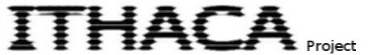</p>
	
	<h3 align=left><li><b> INTRODUCCIÓN</b></h3>
	<p><br></p>
	<p> Basado en la aplicación y modo de funcionamiento de ITHACA se puede cambiar a una lógica basada en juegos para "jugar". Esto es lo que hace esta aplicación. <br> El uso de la misma debería ser el siguente paso una vez dominado el funcionamiento de ITHACA. Se aconseja por lo tanto probar este una vez se ha probado el anterior.</p>
	
	<h3 align=left><li><b> PANTALLA PRINCIPAL</b></h3>
	<p><br></p>
	<p>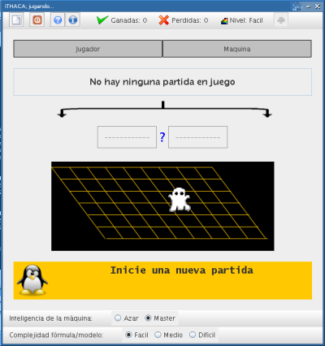</p>
	<p><br></p>
	<P>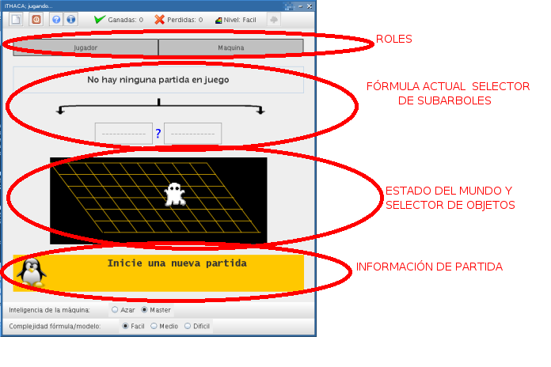</p>
	
	<h3 align=left><li><b> FUNCIONAMIENTO DEL JUEGO</b></h3>
	<p><br></p>
	<p> El funcionamiento es el siguiente. La máquina propone una fórmula correctamente formada y un modelo, que se mostrarán en la pantalla principal. Después se pedirá al usuario si desea jugar como verificador (llegar a algo verdadero) o como falsador (llegar a algo falso). De esta manera se repartirán los roles.</p>
	<p><br></p>
	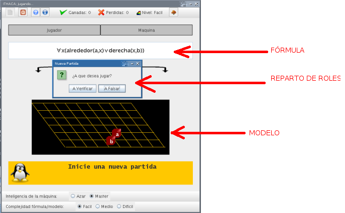
	<p><br></p>
	<p> La inteligencia de la máquina y la complejidad del par fórmula/modelo se deben elegir previamente en la parte inferior de la ventana. Existen tres niveles de complejidad.<br> La inteligencia de la máquina tiene dos escalones. En uno de ellos, llamado "azar", la máquina elije su siguiente jugada de manera aleatoria. En el modo "master", la máquina piensa una estrategia que la pueda llevar a la victoria (en caso de que exista) y la seguirá cuando le toque jugar.</p>
	<p> El objetivo es recorrer el árbol de la fórmula e intentar llegar a un nodo hoja cuyo valor decidible (verdadero o falso) coincida con el que interesa a cada jugador. En ese caso el jugador que le coincida gana la partida. En el juego participa el jugador humano que debera decidir sus propias jugadas y la máquina como oponente.<br> Una vez los roles han sido repartidos se mostrarán continuamente en la parte superior de la ventana. Además dos flechas indicarán de quien es el turno de juego.<br>
	
	Una fórmula del lenguaje de ITHACA puede encontrarse siempre en uno de los siguientes tres estados:<br>
	- <b>Estado 1.</b> La fórmula, vista desde lo más general, es de la forma: Cuantificador(subfórmula).Siendo el cuantificador Existe un x o Para todo x.
 	Estando en "Estado = 1", significa que alguien debe elegir uno de los objetos de la malla para resolver el cuantificador. Es decir, pasar de "Paratodo x Grande(x)" a algo concreto como "Grande(a)" o "Grande(c)".<br>
 	Si el cuantificador es universal, la decisión y por tanto el turno de juego recae en el falsador.<br>
 	Si el cuantificador es existencial, juega el verificador.<br>
	
	Si le toca jugar a la máquina, se verá como un objeto del modelo parpadea y su nombre es resuelto en la fórmula original para el primer cuantificador que exista. Si jugara el jugador, para elegir un objeto debe hacer click sobre él en el modelo.</p>
	<p><br></p>
	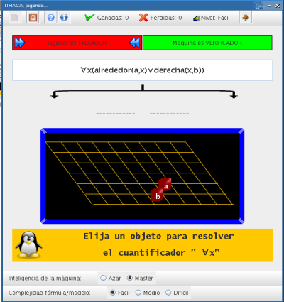
	<p><br></p>
 
 	- <b>Estado 2.</b>  La fórmula está en derivación, de la forma: subfórmula conector subfórmula. Significa que alguien debe elegir una de las dos subfórmulas para continuar el juego.<br>
 			Si el conector es una unión(v) o una implicación (->)  juega el verificador.
 			Si el conector es una intersección(^) o una bimplicación(<->)  juega el falsador</p>
	<p> Nuevamente si el turno corresponde a la máquina, automáticamente ejecutará su jugada. En caso de que sea del jugador, deberá hacer click en uno de los botones que representan las subfórmulas que forman la principal</p>
 	<p><br></p>
	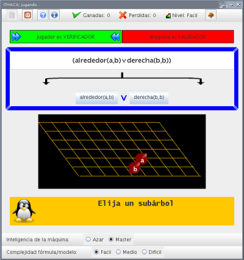
	<p><br></p>
 	
 	- <b>Estado 3. </b> La fórmula es la negación de una subfórmula o un cuantificador. En este caso nadie realiza una jugada. Lo que ocurre es que se eliminará automáticamente la negación y se cambiarán los roles entre los jugadores (el falsador pasa a ser verificador y viceversa).<br>
	
	- Toda fórmula del lenguaje se puede identificar en uno de estos cuatro estados siempre. Sino, es que es una "HOJA". Una hoja es una fórmula simple del lenguaje directamente decidible: grande(a), detras(a,b)... <br> Cuando se llega a una hoja, la partida termina. Si su valor es verdadero, ganará el jugador que en ese momento tenga el rol de verificador y si es falso el que tuviera el rol de falsador.<br>
	<p><br></p>
	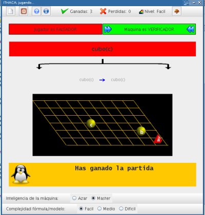
	<p><br></p>
	<p><br></p>
	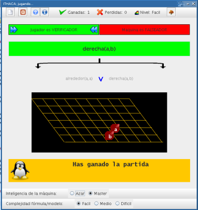
	<p><br></p>
	<p><br></p>
	<p><br></p>
	<p><br></p>
	<p>En cualquier momento puede verse el árbol completo de la fórmula usando el botón correspondiente de la barra de herramientas superior</p>
	<p><br></p>
	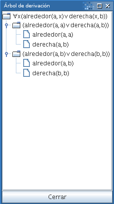
	<p><br></p>
	<p><br></p>
	<p><br></p>
	
	<h3 align=left><li><b>INTRODUCIENDO NUEVAS FÓRMULAS AL JUEGO</b></h3>
	<p><br></p>
	<p> Es posible ampliar el número de fórmulas y modelos con que cuenta la máquina. Para ello se debe hacer uso del programa "Ithaca Formula Manager", también incluido. Su funcionamiento es simple e intuitivo y permita insertar o eliminar fórmulas en cada nivel de complejidad.</p>
	<p><br></p>
	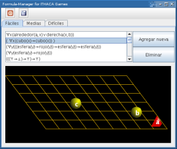
	<p><br></p>	
	<p> La pantalla para introducir fórmulas y modelos funciona de forma similar a la de ITHACA, aunque hay algunas restricciones:</p>
	<p>La fórmula introducida debe ser una Fórmula Bien Formada. La propia máquina se encarga de verificar esto.</p>
	<p>El número máximo de objetos es de cinco, que serán nombrados automáticamente por el sistema.</p>
	<p></p>
	<p><br></p>
	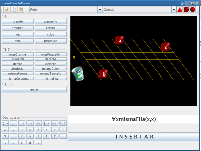
	<p><br></p>	
	

</BODY>


</HTML>
